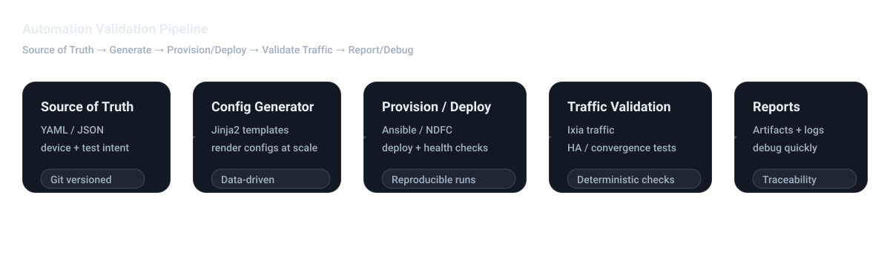

Wenjing (Wendy) Shi
Senior Network Automation Engineer | CCIE ×2
Senior Network Automation Engineer specializing in large-scale data center fabrics and automation-driven validation systems. Experienced in designing reproducible infrastructure pipelines integrating deployment, configuration generation, and traffic validation across multi-vendor environments.
Automation Validation Pipeline
Reproducible workflow integrating source-of-truth, configuration rendering, automated provisioning, traffic validation, and structured reporting.

Professional Experience
Network Automation Engineer
- Designed and deployed BGP EVPN data center fabrics in virtualized lab environments with automated control-plane and data-plane validation.
- Led multi-vendor L2/L3 certification testing (Cisco, Arista, A10, F5) integrating Ixia traffic simulation with Robot Framework automation.
- Architected a Python-based automation framework using YAML and Jinja2 to dynamically generate configurations at scale.
- Integrated provisioning, configuration, and validation into reproducible pipelines, reducing manual setup effort by 60%+.
- Performed cross-layer (L1–L3) troubleshooting and convergence analysis using packet capture and control-plane debugging.
Computer Systems Analyst
- Designed and maintained enterprise-grade network infrastructure with high availability and security enforcement.
- Managed firewall, VPN, IDS/IPS configurations and proactive monitoring to reduce operational risk.
Network & Systems Administrator
- Administered Linux and Windows environments; automated operational tasks with scripting.
- Designed AWS and Azure multi-cloud infrastructure using CloudFormation and Ansible.
Technical Skills
Networking
BGP, EVPN, VXLAN, OSPF, vPC, DC Fabric Architecture
Automation
Python, Ansible, Robot Framework, YAML, Jinja2
Validation
Ixia, HA Testing, Convergence Analysis, Wireshark
Systems
Linux, Windows Server, VMware, SAN (FC, FCoE)
DevOps
Git, Jenkins, CI/CD, ELK, Docker, Kubernetes
Certifications
- CCIE Security
- CCIE Enterprise
- JNCIA-Junos
- AWS Advanced Networking
- Azure Fundamentals